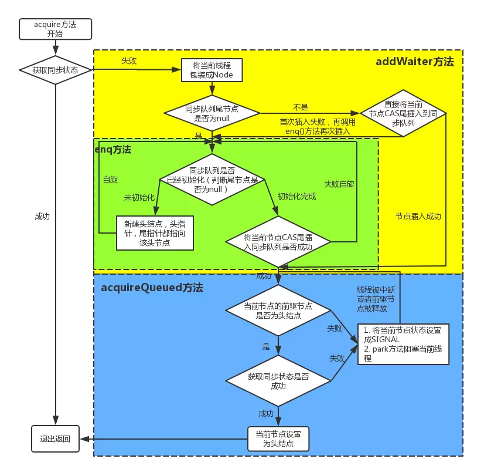

AQS的文章之前写过一篇,还在CSDN,今天重新看了一边,就正好搬过来,顺便补充和修改一些
AQS
AQS是抽象同步队列AbstractQueuedSynchronizer的简称,是实现同步机制的基础,并发包中的各种所谓的锁就是通过AQS实现的.
LockSupport
顾名思义,锁支持,是rt.jar包中的工具类,提供硬件层次的挂起和唤醒锁
主要两个静态方法:
- LockSupport关联的许可证:根据名字看做一个黑盒的许可证
- park():如果当前线程持有到许可证,调用pack方法后会马上返回,结束方法,如果没有持有许可证,就会挂起处于阻塞状态,线程默认情况下没有许可证.
- unpark(Thread thread):获取许可证.有几种情况:
- 先执行unpack,再执行pack,pack会直接返回,结束方法.
- 先执行pack,线程挂起,再执行unpack,线程被唤醒.
- 还有一些带时限的方法,就不详细说了.毕竟是底层的东西,知道大意就可以了,一般用不上.
AQS使用
AQS给我的感觉像是一个”接口”(实际是一个抽象类),又像是一个底层工具类.其实就是模板模式,AQS中最重要的是其维持的一个单一的状态变量state(int),不同类型的锁机制就是通过对state的不同的定义来实现的.例如,可重入锁ReentrantLock,state可以用来表示当前线程获取锁的可重入次数;对于读写锁ReentrantReadWriteLock来说,state的高16位表示获取到的读锁的线程的可重入次数,低16位是写锁.对于smaphore来说,state用来表示当前可用信号的个数;对于CountDownlatch来说,state用来表示计数器当前的值.
- 独占 and 共享
独占,顾名思义,就是这个锁同时只能被一个线程占有,共享就相反,在同一时刻可有有多个线程获得同步状态 - AQS根据对于state的操作方式分为独占方式和共享方式:
- 独占方式:
- 获取资源
void acquire(int arg)或void acquireInterruptibly(int arg) - 释放资源
boolean release(int arg)
- 获取资源
- 共享方式:
- 获取资源
void acquireShared(int arg)或void acquireSharedInterruptibly(int arg) - 释放资源
boolean releaseShared(int arg)
- 获取资源
- 光看这几个方法没什么用,但是暂时先记住名字,解释一下获取资源中的两个方法(即有无Interruptibly)的区别:有Interruptibly意味着要对中断进行响应,也就是说如果获取资源失败后进入挂起状态时,有其他线程中断该线程,该线程会抛出
InterruptedException而中断,而没有Interruptibly的意味着忽略中断,不理睬其他线程的中断请求.
- 独占方式:
- 获取资源和释放资源的过程:
- 独占
- 当一个线程调用acquire方法时,会使用tryAcquire方法尝试获取资源(可以暂时将这个方法视为一个黑盒),后续具体的操作就是设置状态变量的值,成功则直接返回,失败则将当前线程封装成AQS的一个内部类Node插入到AQS的阻塞队列尾部,并调用LockSupport.pack方法挂起自己.
- 当一个线程调用release方法时,会使用tryRelease方法释放资源,还是设置状态变量state的值,然后调用LockSupport.unpack方法激活AQS队列中的被阻塞的一个线程,被激活的线程使用tryAcquire尝试,看当前的state是否满足要求,满足则成功激活,失败则重进入队列挂起.
- 我上面说,将tryAcquire和tryRelease视为一个黑盒,是因为AQS并没有实现这两个方法,而是交由具体的子类自行实现.具体的操作也说了,就是通过CAS设置状态变量的值,来控制同步.
- 共享
- 类似独占,不同的是,获取资源失败的线程被封装称为Node.SHARED类型的Node节点插入队列,而独占中是封装称为Node.EXCLUSIVE类型的节点.
- 独占
条件变量
- 条件变量ConditionObject也是AQS的内部类.有什么用呢?其实就是类似wait和notify,不过在AQS中称为await和signal.就是控制同步,你在基础编程中如何使用wait和notify,AQS实现类中就怎么使用await和signal.类似的,wait和notify一定要在synchronized代码块或方法中使用,await和signal也必须在实现类的lock和unlock中间使用.
- 内部实现
- 过程是这样的:当前线程调用条件变量的await时(当前线程一定调用过lock方法,内部会构造一个类型为Node.CONDITION类型的node节点,然后插入到队列末尾(这个队列不是AQS的阻塞队列,是条件变量这个内部类中的一个条件队列),然后释放获得的锁,这时如果有其他线程使用lock获取锁,会获得锁.这时如果有另一个线程调用的了条件变量的signal方法,在内部会把条件队列中队头的一个节点从条件队列里面移到AQS的阻塞队列中,等待时机获取锁.
- 一个AQS可以有多个条件变量,通过newCondition方法获取条件变量实例,这个方法也需要子类实现.
AQS底层
同步队列
AQS叫做抽象同步队列,自然是有个队列的,而队列的实现无非就是数组和列表,那就要深究一下这个队列是什么样子的.
看一下底层队列链表节点代码:
static final class Node {
/** Marker to indicate a node is waiting in shared mode */
static final Node SHARED = new Node();
/** Marker to indicate a node is waiting in exclusive mode */
static final Node EXCLUSIVE = null;
/** waitStatus value to indicate thread has cancelled */
// 节点从队列中取消
static final int CANCELLED = 1;
/** waitStatus value to indicate successor's thread needs unparking */
// 后继节点处于等待状态,如果当前节点释放锁,后继节点可以运行
static final int SIGNAL = -1;
/** waitStatus value to indicate thread is waiting on condition */
// 节点进入等待状态
static final int CONDITION = -2;
/**
* waitStatus value to indicate the next acquireShared should
* unconditionally propagate
*/
//下一次共享式同步状态获取将无条件传播下去
static final int PROPAGATE = -3;
// 节点状态
volatile int waitStatus;
// 前驱节点
volatile Node prev;
// 后继节点
volatile Node next;
//线程
volatile Thread thread;
//等待队列中的下一个节点
Node nextWaiter;
//省略一些构造方法
....我们可以看到,这是一个双向队列,可以绑定一个线程.同时,AQS中还有两个Node节点,head和tail,也就是头结点和尾节点,用来管理同步队列,实现获取锁失败入列和释放锁是出列等.
我们可以看acquire()方法,这是获取独占锁的方法:
public final void acquire(int arg) {
if (!tryAcquire(arg) &&
acquireQueued(addWaiter(Node.EXCLUSIVE), arg))
selfInterrupt();
}其实很简单,就是如果能拿到锁,返回,如果没有拿到锁,就入队列,而这个tryAcquire()是抽象方法,也就是需要子类去实现的,而我之前也说了,其实就是去修改state这个状态变量.
然后说一下入队操作,就是将线程封装成节点,然后不断尝试CAS尾插入队列,不过有初始化头结点的过程.
这个链表的队列的头节点是一个虚节点，所以一般是用头节点的下一个节点获取锁（后面的头节点是指虚节点的下一个节点）
（这里也有ReentrantLock的公平锁和非公平锁的实现原理，公平锁在一个线程请求锁的时候会判断队列中是否还有节点，如果没有，当前线程去获取锁，失败放进队列，而如果有，则直接加入队列，而非公平锁会直接进行获取锁，公平与否就体现在这里。）
接着上面说，如果头节点在自旋中获取到了锁，就会设置当前节点为虚节点，这样，下一个节点就可以继续获取锁了，而在获取锁期间发生了异常（lockInterruptly则会相应中断，抛出异常），当前节点会被封装成cancel节点，然后唤醒后续节点获取锁。
有一张图很好,copy来的.

然后看一下释放锁:
public final boolean release(int arg) {
if (tryRelease(arg)) {
Node h = head;
if (h != null && h.waitStatus != 0)
unparkSuccessor(h);
return true;
}
return false;
}
其实重点是unparkSuccessor()方法,不过太长了,就简单说一下,就是获取头结点的后继节点,调用LookSupport.unpark(Thread)方法,唤醒线程.
其他就是可中断和一些时限的方法,大致是一样的,还有共享锁,其实就是把锁从一个变成n个,过程还是一样的.
Condition原理
我们知道,每一个AQS可以拥有多个condition变量,而每一个condition变量都拥有一个等待队列,使用await()时,线程入队,使用signal()时出队列.这个等待队列节点还是AQS中的Node,还记得Node中有个nextWaiter节点,就是用来构造等待队列,所以可以知道,这是一个单向的队列.
await
当我们调用condition.await()方法后会使当前获取锁的`线程进入等待队列,具体是这样的.
- 将当前线程封装成Node,尾插入队列
- 进入一个循环,不断的判断是否被唤醒,如果没有使用LockSuppor.pack(this)挂起当前线程
- 跳出循环的条件有两个,一个是被signal()唤醒,另一个是当前线程被中断.
signal/signalAll
使用condition的signal或signalAll可以将等待队列中等待时间最长的节点移动到同步队列中,因为是尾插,满足FIFO,所以头结点就是等待时间最长的,然后就是更改头节点的状态,然后尾插入同步队列.
结语
AQS是JUC的基础,一般我觉得掌握整体的一个流程就可以了,然后熟练一点API,对于Lock的实现类和阻塞队列的实现的理解很有帮助.